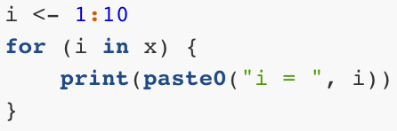
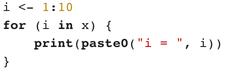
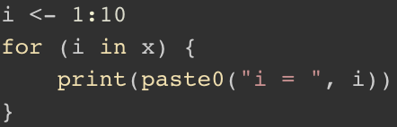

22. R Markdown
22.1 R Markdown
22.2 Markdown文法の基本
22.2.2 強調
Input:
Output:
文章の一部を太字にしてみましょう。イタリックもいいですね。取り消し線はあまり使わないかも。
22.2.3 箇条書き
Input:
Output:
- 項目1
- 項目1-1
- 項目1-2
- 項目1-2-1
- 項目1-2-1-1
- 項目1-2-2
- 項目1-2-1
- 項目2
- 項目3
続きまして順序付き箇条書きですが、これは-（または*）を数字.に換えるだけです。順序なしの場合と違って数字の後にピリオド（.）が付くことに注意してください。また、下位項目を作成する際、順序なしはスペース2つ以上が必要でしたが、順序付きの場合、少なくとも3つが必要です。
Input:
Output:
- 項目1
- 項目1-1
- 項目1-2
- 項目2
- 項目2-1
- 項目2-2
- 項目3
22.2.4 見出し
章、節、段落のタイトルを付ける際は#を使います。#の数が多いほど文字が小さくなります。章の見出しを##にするなら節は###、小節または段落は####が適切でしょう。見出しは####まで使えます。
Input:
Output:
見出し1
見出し2
見出し3
見出し4
22.2.6 表
Input:
|ID |Name |Math |English |Favorite food|
|:---:|---------|-------:|-------:|-------------|
|1 |SONG |15 |10 |Ramen |
|2 |Yanai |100 |100 |Cat food |
|3 |Shigemura|80 |50 |Raw chicken |
|4 |Wickham |80 |90 |Lamb |Output:
| ID | Name | Math | English | Favorite food |
|---|---|---|---|---|
| 1 | SONG | 15 | 10 | Ramen |
| 2 | Yanai | 100 | 100 | Cat food |
| 3 | Shigemura | 80 | 50 | Raw chicken |
| 4 | Wickham | 80 | 90 | Lamb |
1行目はヘッダーであり、太字かつ中央揃えになります。2行目以降はデフォルトでは左揃えになりますが。ただし。|---|をいじることによって当該列の揃えを調整できます。|:---|は左 (デフォルト)、|---:|は右、|:---:|は中央となります。また-の個数は1個以上なら問題ありません。つまり、|-|も|---|も同じです。

22.2.10 数式
インライン数式は$数式$で埋め込むことができます。数式は\(\LaTeX\)の書き方とほぼ同じです。ちなみに、R Markdownの数式はMathJaxによってレンダリングされます。このMathJaxライブラリはHTMLに埋め込まれているのではないため、インターネットに接続せずにHTMLファイルを開くと数式が正しく出力されません。
Input:
Output:
アインシュタインと言えば、\(e = mc^2\)でしょう。
数式を独立した行として出力する場合は、$の代わりに$$を使用します。
Input:
Output:
独立した数式の書き方
\[ y_i \sim \text{Normal}(\mathbf{X} \boldsymbol{\beta}, \sigma). \]
もし数式が複数の行で構成されている場合は$$内に\begin{align}を使用します。むろん、\(\LaTeX\)と使い方は同じです。
Input:
複数の行にわたる数式の書き方
$$
\begin{align}
Y_i & \sim \text{Bernoulli}(\theta_i), \\
\theta_i & = \text{logit}^{-1}(y_i^*), \\
y_i^* & = \beta_0 + \beta_1 x_1 + \beta_2 z_1.
\end{align}
$$Output:
複数の行にわたる数式の書き方
\[ \begin{align} Y_i & \sim \text{Bernoulli}(\theta_i), \\ \theta_i & = \text{logit}^{-1}(y_i^*), \\ y_i^* & = \beta_0 + \beta_1 x_1 + \beta_2 z_1. \end{align} \]
ここまで見ればお分かりかと思いますが、$$の中には\(\LaTeX\)コマンドが使用可能です。たとえば、行列を作成する際は以下のように\begin{bmatrix}環境を使います。
Input:
行列の書き方
$$
X = \begin{bmatrix}
x_{11} & x_{12} \\
x_{21} & x_{22} \\
x_{31} & x_{32}
\end{bmatrix}.
$$Output:
行列の書き方
\[ X = \begin{bmatrix} x_{11} & x_{12} \\ x_{21} & x_{22} \\ x_{31} & x_{32} \end{bmatrix}. \]
22.2.11 引用
Input:
「政治とは何か」についてイーストンは以下のように定義しました。
> [A] political system can be designated as those interactions through which values are authoritatively allocated for a society.Output:
「政治とは何か」についてイーストンは以下のように定義しました。
[A] political system can be designated as those interactions through which values are authoritatively allocated for a society.
22.2.12 コメント
R Markdownにもコメントを付けることができます。とりあえず書いたが要らなくなった段落や文章があって、消すことがもったいない場合はコメントアウトするのも1つの方法です。ただし、コメントアウトの方法はRは#でしたが、これはR Markdownでは見出しの記号です。R Markdownのコメントは<!--と-->で囲みます。
Input:
文章1
<!--
ここはコメントです。
-->
文章2Output:
文章1
文章2
22.2.13 コード
22.3 チャンクのオプション
22.4 ヘッダーのオプション
ヘッダーは文書のタイトル（title）、作成者（author）、作成日（date）のような情報だけでなく、文書全体に適用されるスタイル情報も含まれます。R MarkdownヘッダーはYAML（やむる）形式で書かれています。他にもいくつかの項目としては
subtitle:title-prefix:pagetitle:author-meta:abstract:
R Markdownのコメントは<!--と-->を使いますが、ヘッダー内のコメントはRと同様、#を使います。
22.5 日本語が含まれているPDFの出力
本文中に日本語が含まれている場合、PDF出力の祭、エラーが表示されるだろう。日本語が含まれたPDFの場合、自分のパソコンに日本語TeX環境を整える必要がある。
もし、自分のPCで既に日本語TeX環境が整っている場合、R Markdownのヘッダーを以下のように修正する。
---
title: "R楽しいぞ"
subtitle: "みんなでやろうぜ"
author: "矢内勇生 a.k.a Rの神"
date: "2020年4月10日"
output:
pdf_document:
highlight: "default"
number_sections: yes
toc: yes
latex_engine: xelatex
mainfont: ipaexg.ttf
---コンパイルしたら以下のようなPDFファイルが生成される。

ヘッダーの主な修正はoutput:オプションである。それでは一つずつ解説する。
pdf_document:: PDF出力highlight:: コードのハイライトテーマを設定する。- 使用可能なテーマは
default、tango、pygments、kate、monochrome、espresso、zenburn、haddock、breezedarkの9種類である。それぞれの例は後で紹介する。
- 使用可能なテーマは
number_sections:: 章・節の前に数字を付ける場合、yestoc: 目次を付ける場合、yeslatex_engine:: ここはxelatexのままにする。mainfont:: ここもipaexg.ttfのままにする。
highlightテーマについてであるが、rmarkdown 2.1の場合、使用可能なテーマは以下の9種類2である。
default

tango

pygments

kate

monochrome

espresso

zenburn

haddock

breezedark

プリンターのインク、トナーカートリッジが心配ならespresso、zenburn、breezedarkは避けた方が良いだろう。